Edge Gateway
CM upgrade to manage Edge Gateway
-
Log in to cm cli and execute Edge Gateway patch retrieval process.
parameters:
- Host: raptor.demo.guardium
- User: root
- Path: /opt/guardium_tz_bootcamp_automation/upload/source_files/appliances/extensions/SqlGuard-12.0p15004_Edge_Sep_02_2026.tgz.enc.sig
- Port: 2223
- Password: <default service password>
Monitor the progress as the patch downloads to the appliance, noting that the large file size may require a while to complete. Once the download finishes and the patch appears in the available list, do not initiate the installation from the command line. Because this specific update must be managed via the User Interface (UI) or the API, finish the current cli command by selecting thestore system patch install scpqoption. -
Register patch and retrieve information about it (because patch is huge it takes time).
show system patch available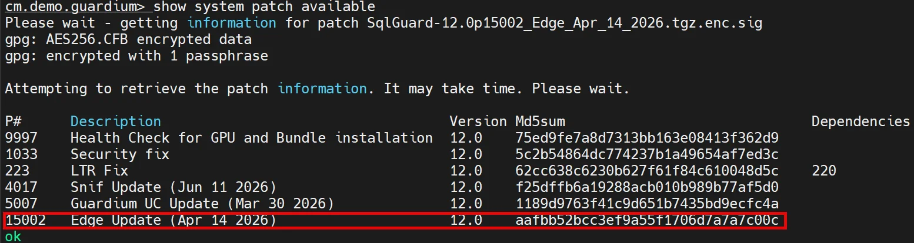
-
From cm UI open Patch Management view. Select the Central Manager 1 and locate the patch 2 that was just uploaded to the system. Trigger the installation process by clicking the Install option 3. Choose the immediate installation 4 and confirm your selection 5 to finalize the task. The system will then schedule the specified patch for deployment
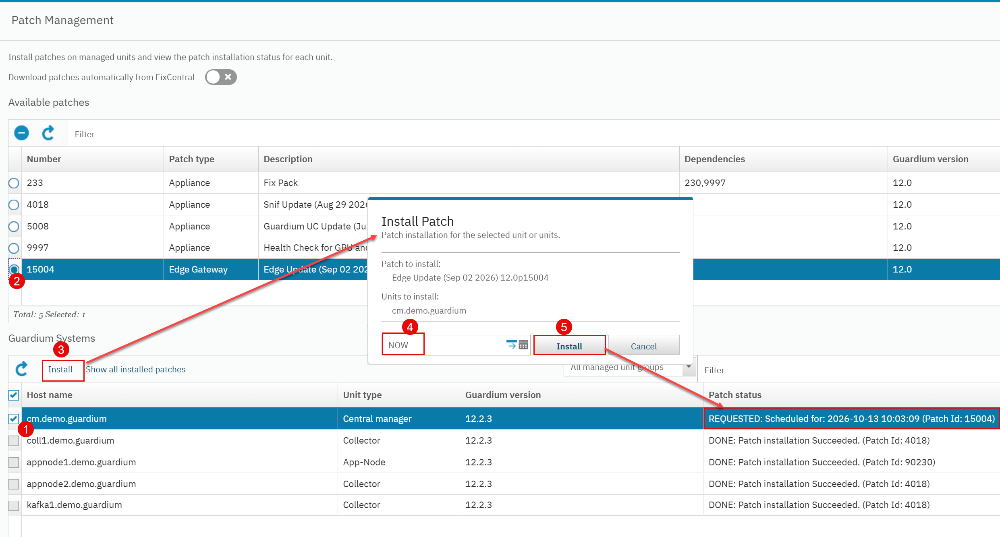
-
While the patch installation runs in the background, shift your focus to the additional laboratory tasks to maintain workflow efficiency.


Start traffic generator - MSSQL on ceratops
-
Start dbtraffic generator on raptor and keep this session running
1 2 3 4 5 6 7
cd /opt/guardium_tz_bootcamp_automation/upload/guardium_notes_dbtraffic source venv/bin/activate guardium-notes-dbtraffic --config config/mssql_ceratops.yaml rebuild guardium-notes-dbtraffic --config config/mssql_ceratops.yaml run --speed slow -
Confirm on coll1 the visibility the MSSQL events in Full SQL (Training) report.
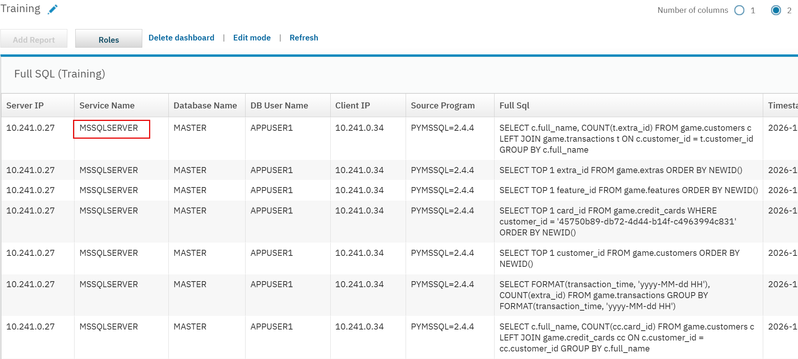

K3s installation
-
Deploy a k3s cluster on the sauropod machine. Configure the installation to disable the default traefik service to ensure the Edge Gateway can utilize the preferred routing mechanism based on nginx proxy.
curl -sfL https://get.k3s.io | INSTALL_K3S_VERSION=v1.32.13+k3s1 sh -s - --disable traefik -
Check node readiness.
1 2 3
kubectl get nodes kubectl get pods -A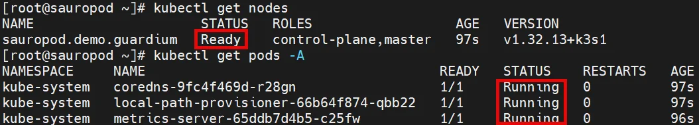
-
Add the name resolving for cm.gdemo.com within the cluster configuration. Ensure that the host entry is correctly mapped to allow multiple services to establish a connection with the Central Manager.
1 2 3 4 5
kubectl -n kube-system patch configmap coredns --type='json' -p='[{"op":"replace","path":"/data/NodeHosts","value":"<sauropod_ip> sauropod.demo.guardium\n<cm_ip> cm.demo.guardium\n<cm_ip> cm.demo.guardium.demo.guardium\n"}]' kubectl -n kube-system patch configmap coredns --type=json -p='[{"op":"replace","path":"/data/Corefile","value":".:53 {\n errors\n health\n ready\n kubernetes cluster.local in-addr.arpa ip6.arpa {\n pods insecure\n fallthrough in-addr.arpa ip6.arpa\n }\n hosts {\n <cm_ip> cm.demo.guardium\n <cm_ip> cm.demo.guardium.demo.guardium\n fallthrough\n }\n prometheus :9153\n forward . /etc/resolv.conf\n cache 30\n loop\n reload\n loadbalance\n}\n"}]' kubectl -n kube-system rollout restart deployment coredns

Setup Edge Gateway config on CM
-
Confirm the installation of patch 15004 from the cm command line. If the installation is still in progress, wait for the process to be completed before proceeding.
show system patch installed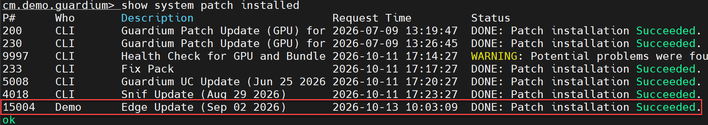
-
Check that feature flag responsible for Edge Gateway is enabled.
grdapi list_feature_flags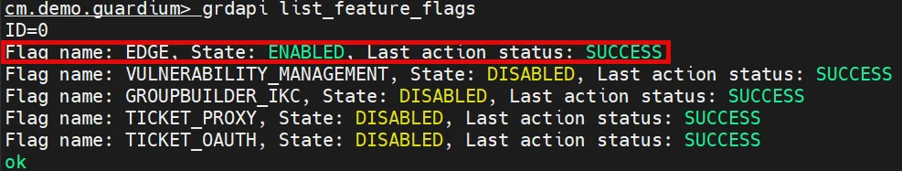
-
Access the Central Manager view within the cm UI and select Register Edge Gateway from the Actions dropdown menu. In the registration window, enter the required information and press Register Edge Gateway button.
Edge parameters:
- Edge name: sauropod (name cannot include dots and special characters)
- Namespace: edge (namespace where Edge Gateway will be deployed)
- Storage class: local-path (storage class used by the Edge Gateway; it must support RWO mode)
- Export to: cm.demo.guardium (aggregator for audited events; for this lab, we are using the Central Manager; you can also have LTR datalake option if you finished LTR lab before)
- Version: v2.2.1 (Edge Gateway version to be installed)
- Use HAProxy for ingress: (routing between services and the aggregator will be configured via HAProxy)
-
The Install edge bundle window will appear along with a prompt to save the generated deployment archive. Skip the file saving, we will donwload it through the
curlcommand displayed in the window. Copy command using icon.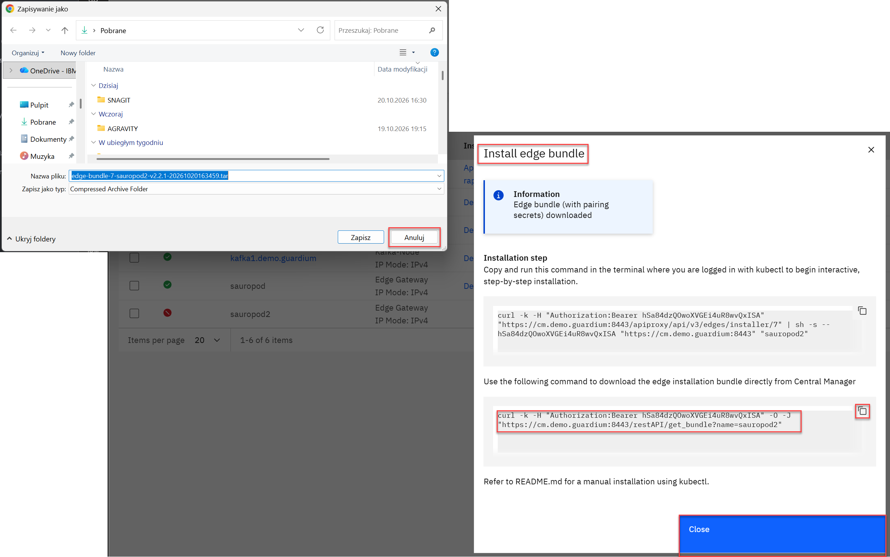
-
On sauropod jump to
/opt/lab_files/directory and execute a copied command to download deployment bundle script.1 2 3 4 5
cd cd /opt/lab_files/ curl -k -H "Authorization:Bearer <token displayed in UI>" -O -J "https://cm.demo.guardium:8443/restAPI/get_bundle?name=sauropod" ls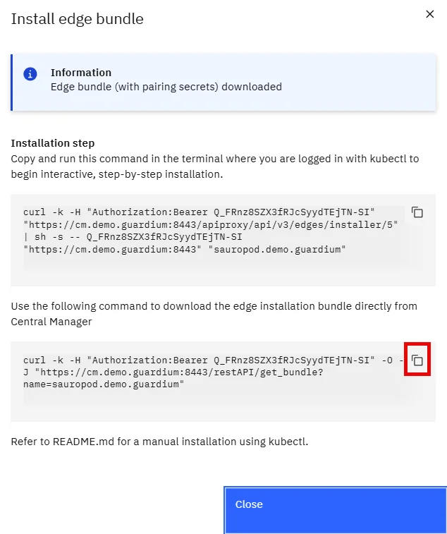
-
Unpack downloaded archive. Exracted files will be located in
/opt/lab-files/sauropoddirectory.tar xvf <bundle_archive>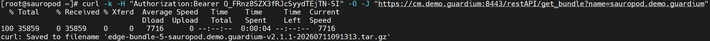


Edge Gateway deployment
-
The deployment initialization script requires the
expecttool on sauropod.dnf -y install expect -
Open the required kubernetes ports.
1 2 3 4 5
firewall-cmd --permanent --add-port=6443/tcp firewall-cmd --permanent --add-port=8472/udp firewall-cmd --permanent --add-port=10250/tcp firewall-cmd --permanent --add-masquerade firewall-cmd --reload -
Navigate to the directory with the extracted archive and run the
edge-install.shscript to initialize the Edge Gateway installation. The script will prompt for the Kubernetes cluster type to be used for the deployment, whether to add the image repository certificates located on the Central Manager, and whether to create the namespace specified earlier during the service definition (select Yes for each of the following prompts).1 2 3
cd /opt/lab_files/sauropod ./edge-install.shscripts answers:
- Is the edge cluster using k3s?:
y - Proceed to install image registry certificates to /var/lib/rancher/k3s/agent/etc/containerd [y/N]?:
y - Proceed to create new namespace and deploy Edge components? [y/N]?:
y
- Is the edge cluster using k3s?:
-
After a short while, you should observe a deployment started and edge-manager pod will appear on the pod list (copy pod name for next command).
kubectl get pods -A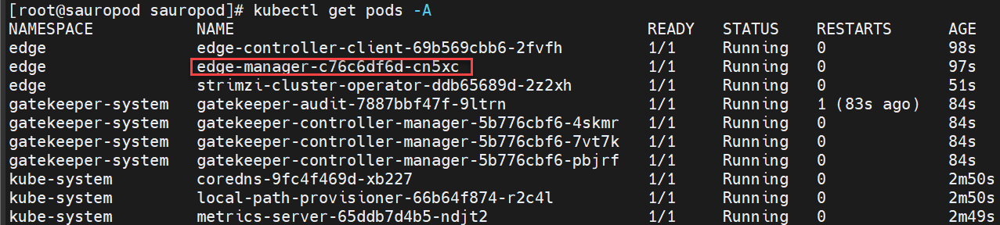
-
After few minutes the Edge Gateway deployment should finish with success. Execute this loop to confirm it (provide your edge-manager pod name).
while true; do LINE=$(kubectl logs <edge_manager_pod_name> -n edge | grep "EDGE_SERVICES_INSTALLATION_STATUS is Completed" | tail -n 1); [ -n "$LINE" ] && echo "$LINE" && break; sleep 5; done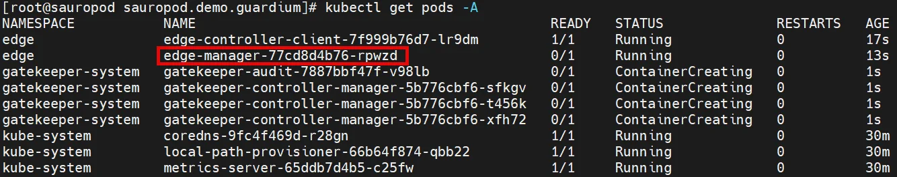
-
Open the Central Manager view in the cm UI and confirm the status change for sauropod Edge Gateway. A green checkmark should now appear, confirming that communication is working correctly.
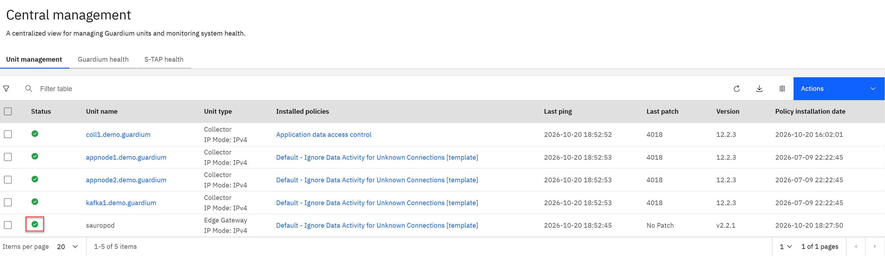
-
In the cm UI, create a new dashboard and name it - Edge Gateway. Then, add the following four reports:
- Edge Buff Usage Monitor
- Edge Extraction Log
- Edge Live Full SQL
- Edge Live Session List
Even though you are not sending any events to the Edge Gateway yet, the Edge Buff Usage Monitor report should show sniffer statistics generated every minute.
-
The next step is to set the policy. In the cm UI, open the Security Policies view. Select the Log Everything policy, and then select the Install option from the dropdown list. In the window that appears, select just deployed Edge Gateway and the Install and Override option. The execution of the change will be confirmed by an additional message.
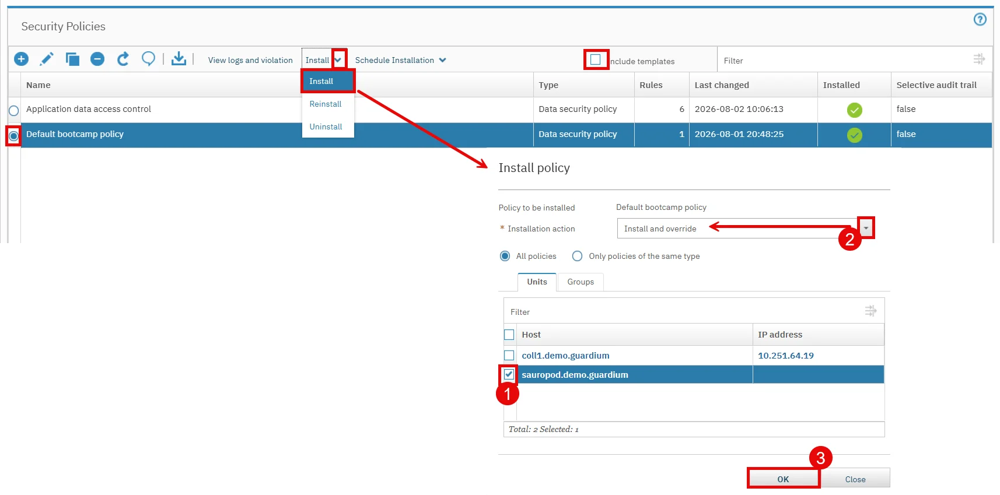
-
In the Central Management view, information about the installation of the new policy should appear.
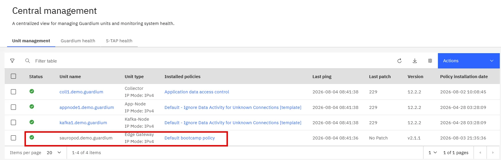


Send traffic from STAP to Edge Gateway
-
In the Central Management view, select the Edge Gateway. This will display a list of ports where the service is listening for specific traffic types. These ports are randomly assigned from the NodePorts pool for each Edge Gateway instance. Make a note of both ports assigned to Windows S-TAP, as you will need them for the next configuration step.
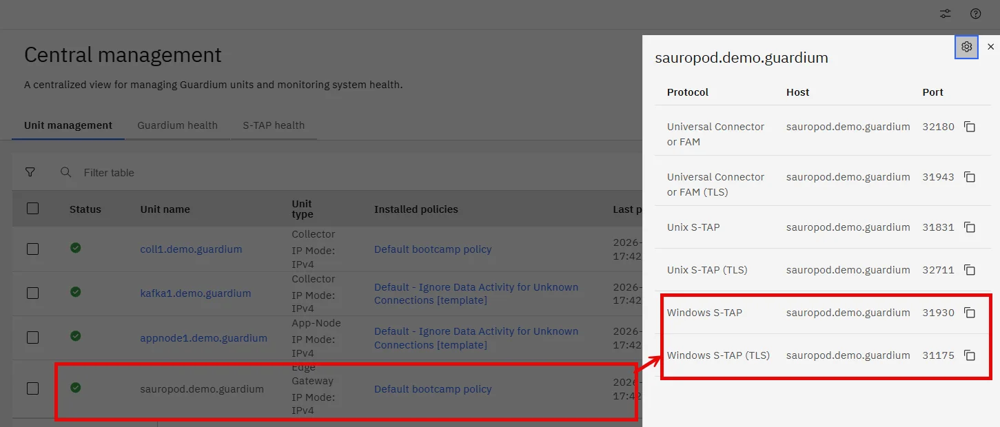
-
On cm open the Setup by Client view and select the ceratops.demo.guardium client. Then, choose the currently installed S-TAP version - 12.2_r120202259_1 - and change the values:
- WINSTAP_USING_EDGE: 1
- WINSTAP_SQLGUARD_IP: sauropod.demo.guardium
- WINSTAP_SQLGUARD_PORT: <node port identified in point 1 as a Windows S-TAP>
- WINSTAP_SQLGUARD_TLS_PORT <node port identified in point 1 as a Windows S-TAP (TLS)>
-
Confirm the change by monitoring the status of the task.
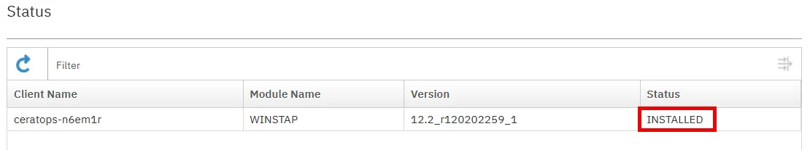
-
In the Edge Buff Usage Monitor report (in the Edge Gateway dashboard), the Analyzer Total value should begin to change, indicating the number of events analyzed by the sniffer.
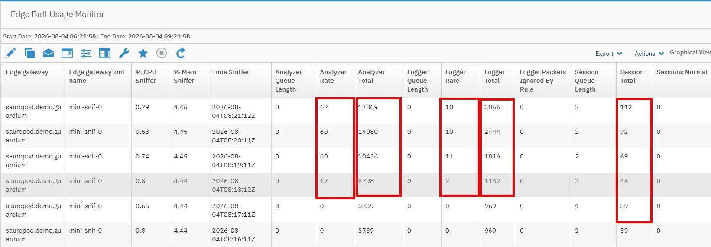
-
Reports with Edge Live in their name provide a new functionality that allows you to download a fragment of the data currently being processed on the Edge Gateway. This confirms the correct operation of policies without having to wait for the full cycle on the aggregator side. The report is equipped with an additional Edge Gateway Data Refresh option, which enables sending a request to the sniffer. Use this option in the Edge Live Session List report.
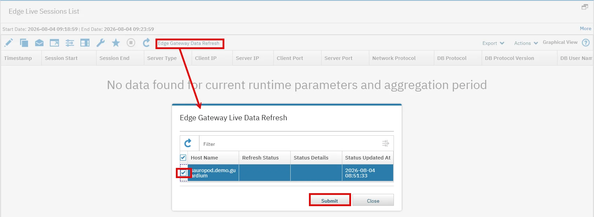
-
After a moment, use the new option again to confirm that the data has been transmitted.
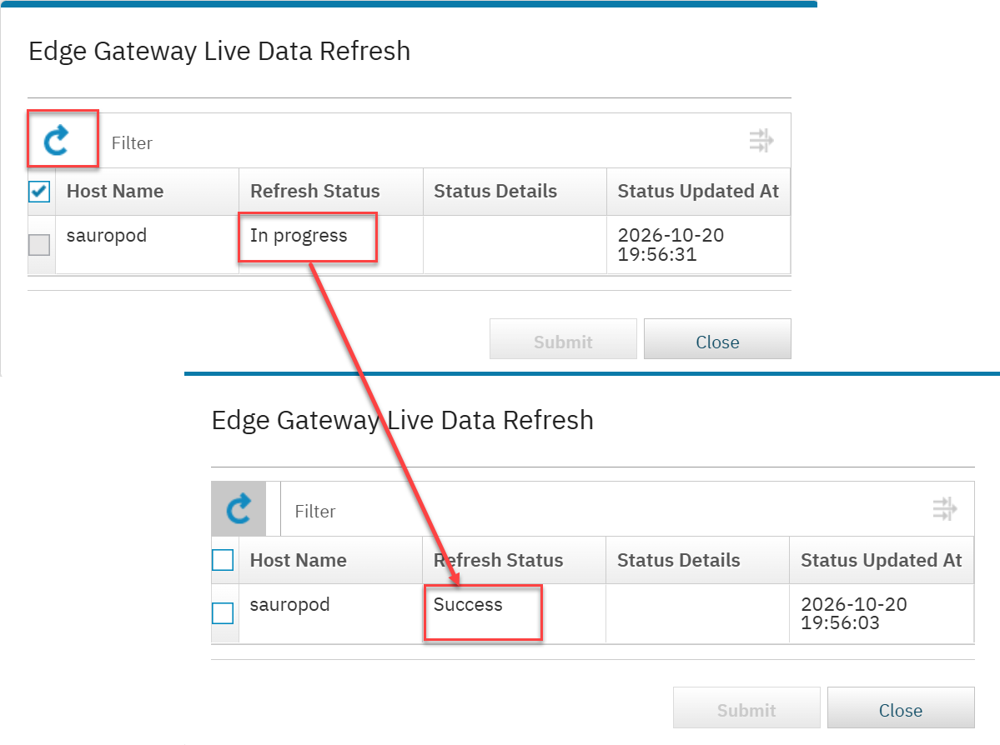
-
Refresh the report and ensure that the data is flowing to the Edge Gateway and is being properly audited according to the installed policy.
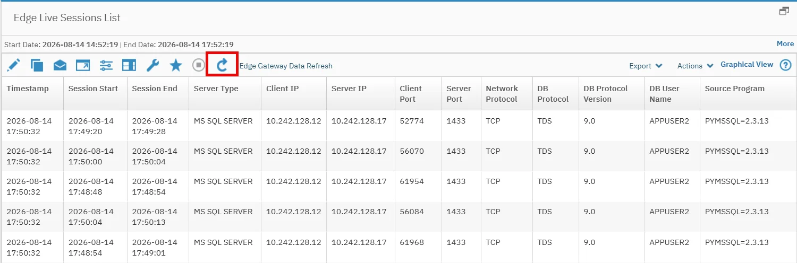
-
You can also check the Edge Live Full SQL report and notice that SQL’s are logged correctly.
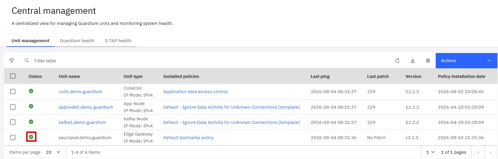


- Data from Edge Gateway are offloaded to aggregator (our cm in this case) on an hour basis. Open the standard Full SQL (Training) report in the Training dashboard and confirm that the data is indeed refreshed according to this schedule (you must have Edge Gateway running minimum 2 hours to observe offload period).
Appendix
Dependencies:
Resources:
Instructor notes: